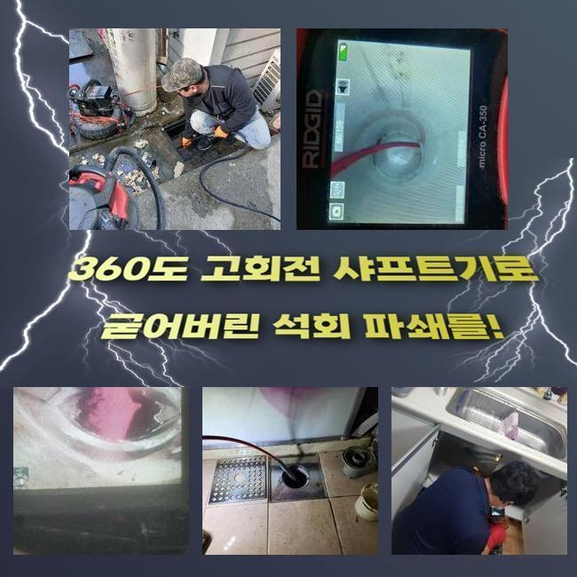
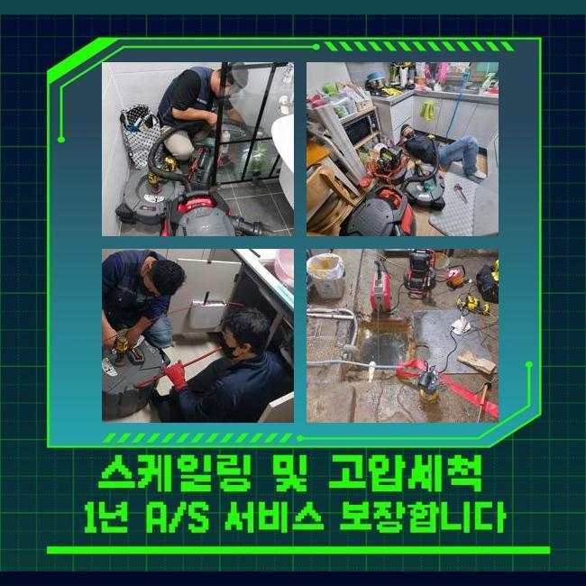
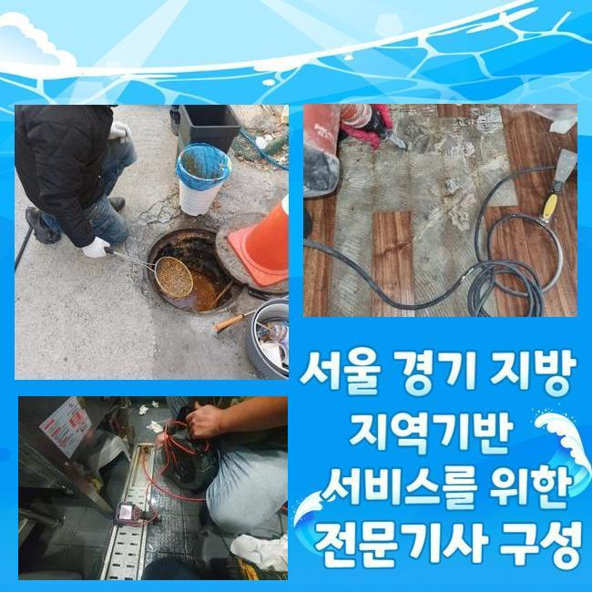
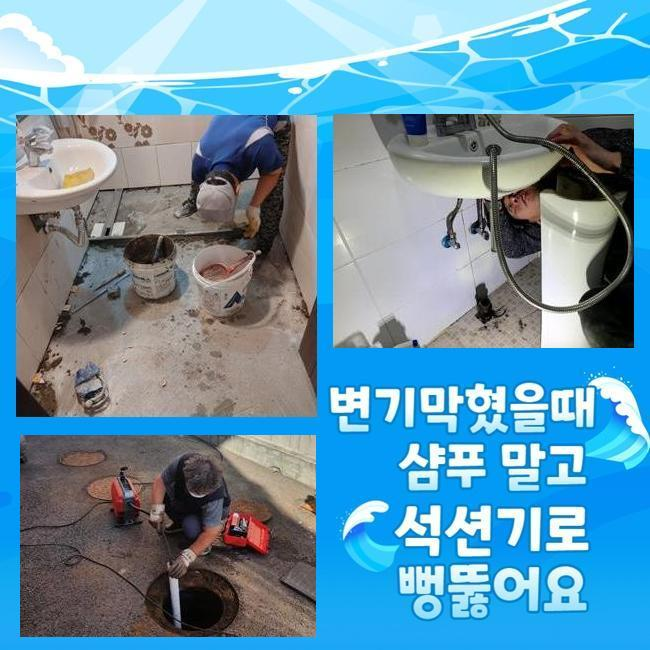
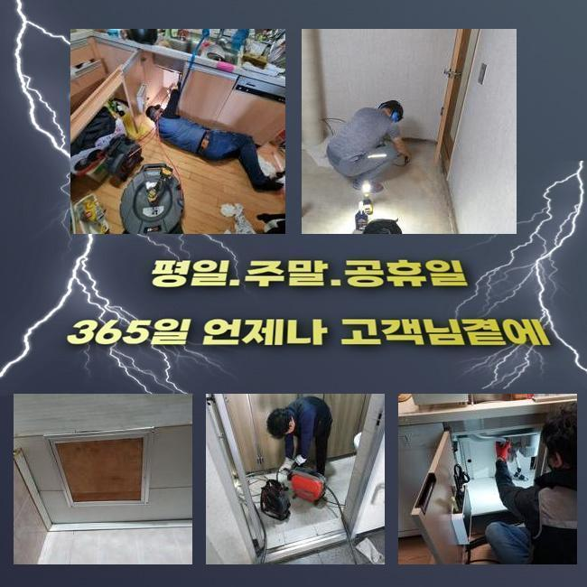
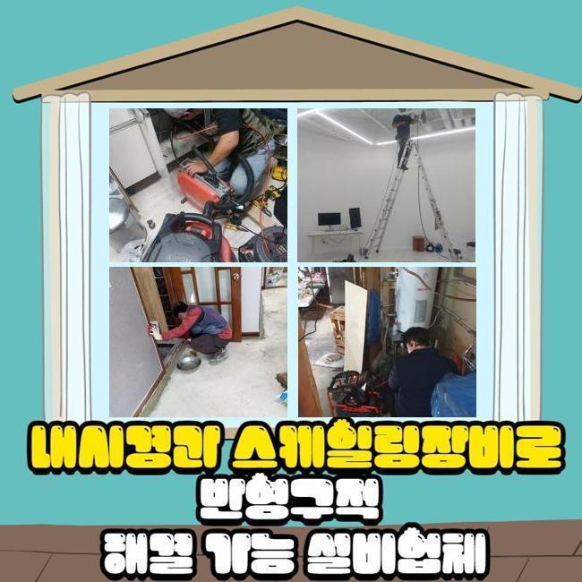

🏠 안산 호수동대변기뚫음 백운동 배수로뚫기 배관설비공사
안산 변기막힘 전문 시공 후기

📋 작업 개요
- 위치: 안산
- 서비스 유형: 변기막힘, 배관막힘, 맨홀막힘, 누수수리, 역류해결, 뚫는업체, 배관청소, 고압세척, 설비공사
- 작업 일시: 2025. 1. 28. 15:39
- 업체명: 하수구수사대 (010-5615-2118)
🔍 문제 상황
안산 호수동대변기뚫음 백운동 배수로뚫기 배관설비공사
하수시설은 주거지나 가게 등에서 꼭 필요한 시설로써 매우 중요합니다
오염된 물을 순환시켜 깨끗한 일상을 유지하도록 도와주며 질병의 발생으로부터 보호합니다
그러나 배수관이 막히게 되는 경우 이물질이 누적되어 지독한 악취가 생기며 집안에 위치한 하수시설에서 크고 작은 문제들이 일어나게 됩니다
이로 인해 하수가 역류하여 넘치거나 깨끗한 물을 사용할 수 없는 상황들이 발생하며 불편한 상황이 발생합니다
오늘은 하수관 역류사태로 긴급한 연락을 받고 서둘러 목적지로 출발했습니다
여러가구가 모인 주택에서 의뢰인의 집부터 방문했습니다
전반적으로 살펴보니 집안에 계신 고객님께서 하수를 내려보낼때마다 부동전에 연결 되어있는 하수관에서 오염수가 거꾸로 치솟는 상황이 일어나고 있었어요
유독 주방쪽에서 물을 이용하실때 하수관을 통해서 발생하는 지독한 냄새도 심각했습니다

🔎 원인 분석
💡 전문가 진단: 정밀 진단 장비를 사용하여 슬러지의 고착 여부를 판명하고 타격/세척 작업을 실시했습니다.
문제점을 해결하고자 내시경기기를 통해서 본관의 안쪽상황을 점검했어요
끈적한 슬러지가 하수라인에서 지독한 악취까지 나게하는 상황으로 가정집의 내부로 오염된 물이 치솟는 현상들이 발생하기도 하므로 빠르게 작업을 시작했습니다
메인이 되는 중심관의 역할을 설명 해드리겠습니다
중심 맨홀의 배수구는 일상 생활 속에서 배출되는 오염수를 내보내는 역할을 하는 설비장치입니다
중심관이 막힌 경우엔 안쪽에서부터 넘친 물과 이물질이 누적되며 부동전 방향의 배수구에서 역류사태가 일어납니다
안쪽으로 이어진 배수관만을 뚫는다고 해도 문제점을 해결하기 어렵기때문에 메인의 배관을 해결하셔야 이후에 사용이 정상적으로 가능합니다
보편적으로 발생하게 되는 일들은 자체적으로 해결하실 수도 있지만 크기가 크고 복잡한 중심관은 고압세척장치를 써서 벽에 달라붙은 슬러지를 청소합니다
고압세척장비의 다양한 크기의 선은 하수관의 끝까지 전부 커버 할 수 있으므로 정확하고 빠르게 세척합니다
중심관에 고압세척기기를 사용해서 슬러지와 침전물을 세척했습니다
청소를 마치고 내시경장치를 활용하여 물이 잘 배수되는지 체크했습니다

🔧 작업 과정
의뢰인께서 모니터를 함께 보시면서 하수관이 완전히 청소된 것까지 확인하시고 난 후에 마무리까지 부탁 하셨어요
다음 현장도 이어서 배수관이 막힌 문제점을 해결했습니다
이번에는 베란다에서 물과 찌꺼기가 넘치는 일이 반복되며 부패한 노폐물이 함께 노출되며 고약한 냄새를 풍기는 상황이였어요
이러한 경우에는 세탁실의 배수관을 통하여 하수관의 청소를 시작하는게 일반적이나 이번에는 작업과정이 어려운 P트랩으로 상황이 여의치 않았습니다
복잡한 구조의 트랩들은 벌레유입을 막는 것에는 유리하겠지만 모양상 이물질들이 쌓여서 배수관의 막힘사고를 일으키는 원인을 제공합니다
이와같은 경우에는 고압세척기기를 이용할 수 없는 상황이 발생합니다
노즐선을 투입할 수 없으므로 고객께 더이상의 비용등을 발생시키지 않고자 효율적인 작업방법을 찾아내야 했습니다
P트랩이 가진 특징으로 인하여 고압세척기계를 투입하면 하수관에 피해를 줄 수도 있어 샤프트기기를 사용하여 작업을 진행했습니다
샤프트장비는 강한 회전으로 배수관에 쌓여있는 슬러지를 청소합니다
샤프트장비는 하수관을 안전하게 보호하면서도 끝쪽까지 작업이 가능합니다
기기의 끝부분에 부드러운 장비를 장착하고 불순물을 분쇄할 수 있어서 구부러진 부위까지 빠르게 진입이 가능하여 배수관 안쪽에 누적되어 있는 불순물도 완벽하게 청소합니다
한번으로는 완벽하게 제거되지 않아서 샤프트기계를 지속적으로 이용하여 딱딱하게 변형된 이물질들을 세척했습니다
배관을 모두 청소하고 배수가 수월하게 순환되는지 확인하였고 고객님도 문제의 배수관을 직접 확인하시고 만족하신다고 하셨어요
배수구가 막힌 경우에 즉시 수리를 하지 않으시면 하수라인 내부에 누적 되어있는 불순물이 썩게되면서 고약한 냄새가 발생할 수 있고 배수가 수월하게 이루어질 수 없어서 오염된 물이 역으로 치솟는 문제점이 생겨납니다
배수관 속에서 압력이 지속적으로 발생하게 되면 하수관이 손상되어 누수같은 대형 공사로 이어지며 고객의 금전적인 부담과 시간적인 손실까지 감수해야합니다


✅ 작업 완료
하수관 역류사고가 생겼다면 전문진에게 도움을 요청하셔서 빠른 대응방법을 준비하셔야 합니다
오늘 두곳의 현장에서 배수구와 관련된 문제를 처리했고 배수관의 지독한 냄새 청소 작업까지 완수했습니다
의뢰인의 수도 사용 습관들을 개선하셔야 한다고 말씀 드리고 배수구 문제 또한 다시 발생하지 않도록 한번 더 조치했습니다
배관의 문제등이 발생하셨다면 편안하게 저희 전문진에게 의뢰 맡겨주시면 신속정확하게 처리 해드리겠습니다



⚠️ 베란다 누수 및 방수 관리 방법
- ✅ 비가 많이 올 때 창틀 주변이나 아래층 천장에 얼룩이 생기는지 정기적으로 확인해 보세요.
- ✅ 우수관 주변 실리콘 마감이 들뜨거나 깨진 틈새가 있는지 손상 여부를 수시로 체크하세요.
- ✅ 베란다 바닥 타일의 줄눈(메지)이 소실되면 그 틈으로 물이 침투하여 누수가 유발됩니다.
- ✅ 누수 의심 증상 발견 시 방치하면 아래층 손실이 커지므로 즉시 전문가의 진단을 받으십시오.
💡 핵심 정리
- 확실한 장비 작업(내시경 점검 및 샤프트 스케일링)으로 원인을 뿌리 뽑습니다.
- 작업 후 1년 이내에 동일한 부위 재발 시 100% 무상 A/S 서비스를 보장합니다.
- 서울 · 경기 · 인천 전 지역에 24시간 언제든 긴급 출동할 수 있도록 항시 대기 중입니다.
❓ 자주 묻는 질문 (FAQ)
🚨 안산 변기막힘 문제로 고민이신가요?
정확한 원인 진단과 확실한 시공으로 재발 없는 해결을 약속드립니다.
24시간 긴급 출동 | 서울 · 경기 · 인천 전지역 | 1년 내 재발 시 무상 A/S